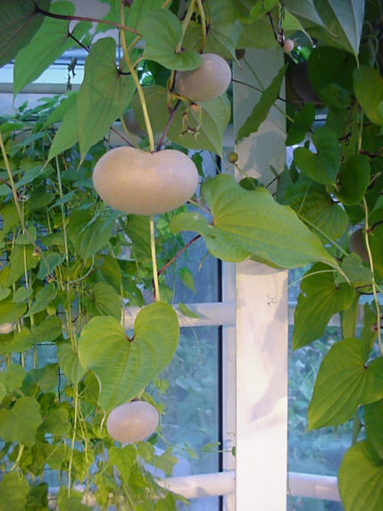

|
ECONOMICALLY
IMPORTANT PLANTS OF INDIA |
| Under-utilized Food and Fodder species and their wild relatives | Contributed by Ms.M.L Annapurna And Dr. Dhanapal, UAS, Bangalore |
Dioscorea bulbifera Linn.

HABIT & HABITAT
It is a glabrous, tall, strong vines,
3-7 m long, large unarmed climber with stems twining to the left. The species
is a native of the tropics of the Old World and occurs in rain forests extending
from the West Coast of Africa to the farthest islands in the Pacific. It is
common throughout India ascending up to 6,000 ft. in the Himalayas. It does
not thrive in the drier parts of India. About 10 varieties are recognised, the
chief among them cultivated in India being var. kacheo, var. suavior,
var. birmanica and var. sativa.
This is commonly found along slopes of ghats, cultivated
fields and Plains, deciduous forest, deciduous forests, dry deciduous forest,
field hedges, forest, forest edges, forest reserves, forests, Hill forests,
Hill slopes, Hills & Plains, mixed forests, moist deciduous forest, Open
and Dense Forest, open forest, Plains, Secondary forest, semi evergreen forest,
shaded places, Shaded places amidst grass, Sugar cane fields, tea gardens, Village
jungles, waste land and Wet Deciduous Forest.
BioticZone: East Coast, Konkan, Konkan plain, West Coast and Western Ghats.
Availability :
Misc: Agarthala, Alibagh, Barhe-Nanasi 5 km, belachi, Bhapur, Bilaspur to Champa,
Bordih, Borim, Caranzol, Chispana, Corbett National Park, Curchinum, Dangsaundane,
danoli, Danpur, Deodongra, deogad, Dhamtari, Diguvametta, Dolara forest, Dolera,
Goldari valley down Saptashringi, Harsul, Hatgad, Hollong, Imphal, Junagadh
forest road (Saurashtra), Kallur betta, Kanjirakadavu, Nilambur, Karjat, Karla,
kasal, Katalgaon forest opposite Saptashringi dongar, Keonchi, Khadaki, Khandala,
Kharbi range, Khargaon, Khopoli, Korba to Kudmura, Kota to Bilaspur, Lamni,
Londa, M.M.Hills, Mahaballeshwar, Manchalli, Matheran, Medshi, Molem, Molem-Belgaum
road, Moodavagulavanka, Nagarahole, Nallamalais, nandagaon, Nandrona, naringre,
Nedumkayam, Nilambur, Neral, Onda, Ordofond-Tudal, Osargaon, Pandharkawada-Bori
Road, Pathur, Pen, Penganga felling series, Pezari forests, phondaghat, Pimpalsonda,
Ponda, porvorim, Potiem forest, Quepem-Sanguem, Raiyi village, ramghat, Regional
Research Station, Brahmavar, Rytiang, Saily, Salewara, Saptashringi valley,
satara, Saurashtra, Sawalghat, Sawarna, Shergarh, Shuntiguthi, Singhari, Soragarh,
Taurenga, Thangaon, Tipeshwar R.F., Tolpetty, Trombay, Vadapuram, Nilambur,
vagiri, Vaitarna power house, vengurla, Vernem and wadicha dongar.
Country: Africa, Ceylon, India, Pacific Islands and SriLanka.
Zone: Central, East, North, North East, South and West.
State: Andhra Pradesh, Arunachal Pradesh, Assam, Bihar, Goa Daman Diu, Gujarat,
Himachal Pradesh, Karnataka, Kerala, Madhya Pradesh, Maharashtra, Manipur, Meghalaya,
Mizoram, Nagaland, Rajasthan, Tamil Nadu, Tripura, Uttar Pradesh and West Bengal,
District: Abor, Akola, Bangalore, Banswara, Belgaum, Bilaspur, Cannanore, Chamba,
Chamoli, Champaran, Chamrajnagar, Chandrapur, Chikmaglore, Coimbatore, Dadra,
Dakshin Kannada, Daman, Durg, Goa, Hassan, Hoshangabad, Jowai, Junagadh, Kameng,
Kangra, Khasi hills, Kinnaur, Kodagu, Kohima, Kolar, Kurnool, Lunglei, Malappuram,
Medak, Mysore, nagerhaveli, Nasik, Pune, Raigad, Raipur, Rajnandgaon, Rathnagiri,
Satara, Shillong, Shimla, Shimoga, Siang, Sindhudurg, South Arcot, Tirap, Uttar
Kannad and , Yawatmal.
Taluk: Bardez, Canacona, Kankavli, Karnaprayag, Kollegal, Nongpoh, Pachmarhi,
Peint, Quepem, Sanguem, Sasan, Satari, sawantwadi and Wadgaon.
Status :
Wild and cultivated
DIAGNOSTIC
FEATURES
Leaves alternate, simple,
broadly ovate-cordate. Bulbils abundant and of different size and shapes; in
certain cultigens the tuber is suppressed in favour of rather large bulbils,
which contain all the reserve food; small bulbils are, as a rule, warted, but
they may be smooth when large.
Tuber solitary, very variable, globose to pyriform, usually small and round,
but large under cultivation and weighing up to 1 kg.; skin purplish black or
earth-coloured, usually coated with abundant, small feeding roots, but smooth
in some cultivated varieties; flesh white to lemon yellow, sometimes marked
with purple flecks and very mucilaginous.
REPRODUCTIVE BIOLOGY
The male and female
flowers in short, slender fascicled spikes, greenish white. The flowers solitary,
approximate, variable in size; perianth segments lanceolate, spreading; stamens
6, minute, the anthers oblong-elliptic; style rudimentary, subulate; pistillate
spikes simple, 10-25 cm long, fasciculate, flowers erect and often appressed
to rachis; capsule 2.5 cm long, 1.5 cm broad, oblong, rounded at each end or
sometimes subacute at apex. Underground tubers often poorly developed or not
at all. Bulbils renewed annually, absent in several cvs, according to method
of cultivation.
Breeding System :
Phenology :
Flowering in July and fruiting occurs during August-October.
There are also reports of flowering during January - December.
Pollinators:
Seed Biology : Winged at base, brown
colored. 2x = c.
Seed Germination :
Selected bulbils are planted from February to April
in various parts of Africa; they may also be planted from August to October
for a May to July harvest. Bulbils are planted while still dormant during the
latter partf the dry season. Some ethnic groups pre-germinate the plants and
plant them at the beginning of the rainy season. it is usually planted near
trees or put on stakes. The number of sets are planted about 1m apart in rows
or along the edge of the forest.
Cultivation:
Both tuber tops and aerial tubers (bulbils) borne on the stems are used for
propagation. Propagation by aerial tubers is not generally adopted as plants
so raised take about 2 years to produce edible roots. Tuber tops containing
2-3 healthy eye-buds are planted in pits, 2 ft x 2 ft., in rows. The planting
period is generally April-July after the onset of the monsoon, but it may vary
according to local conditions and the species selected for cultivation. Vines
are allowed to trail on the ground or are trained over stakes or trees near
by. The yield of tubers is usually higher when vines are trained on supports
than when allowed to trail on the ground.
MAJOR PESTS & DISEASES
:
Parts used:
Fungi reported as causing diseases in this yam include: Botryodiplodia theobromae,
Cercospora pachy derma, C. ubi-raciborski, Corticium solani, Gloeosporiwnpestis,
Glomerella cingulata, Goplana dioscoreae, Hemileia dioscoreae-aculeata, Mycosphaerella
contraria. Nematodes isolated from this yam include Meloidogyne arenaria and
Scutellonema bradys. Ag Handbook 165159 reports the following as affecting other
species of Dioscorea: Cercospora carbonacea, Colletotrichum sp., Didymella dioscoreae,
and Fusarium sp.
Economic
Potential and Uses
Aerial tubers, Bulbils, Roots and Leaves.
Harvesting Practices
Aerial tubers or bulbils are plucked from the vines as needed. When they are
to be used for replanting, they are dried a few days, and then planted. Some
bulbils may weigh as much as 2 kg before being harvested. The yam is usually
used immediately, no storage being required. However, those bulbils with rounded
corky skins can be kept for a considerable time.
Produce and Products
Bulbils contain 4.5% diosgenin (but see below), 0.3% kryptogenin, 0.3% yamogenin. On ZMB, the root contains 386 calories, 5.2 g protein, 0.3 g fat, 91.4 g total carbohydrate, 3.1 g fiber, 3.1 g ash, 238 mg Ca, and 100 mg P. Dry aerial tubers contain 5.77% saponin. Tubers also contain 0.09% caoutchouc. The Wealth of India47 reports analyses of the tuber at 7.4-13.3% albuminoids, 3.3-7.1% ash, 0.8-1.3% fat, 75.1-81.4% carbohydrates, 3.3-9.6% fiber, 0.45-0.77% P205. Poisonous alkaloids, volatile acids, and calcium oxalate should be eliminated before consumption. Hager's Handbook33 mentions 5.7% saponins, 0.45% diosgenin, Diosbulbin -A ( Diosbulbin -B (CigHztA), and Diosbulbin -C . Tubers contain a poisonous glucoside. According to Osagie231, there is 18.9 mg sterol per 100 g (wet weight) tuber. Of the sterols, there is 2.2% cholesterol, 22.6% campesterol, 46.7% stigmasterol, and 28.5% beta-sitosterol. Murray et al.732 report a new 18-norclerodane diterpenoid, 8-epidiosbulbin E acetate, as well as the norditerpenoid, diosbulbin.
Processing TechniquesBecause the bulbils are of various sizes when used,
accurate yield data are few. Plants continue to produce bulbils annually for
many years. Although this yam is grown and eaten in some parts of tropical Asia
and Africa, it is not used as much presently as in the past.
Root yields reported for various species of Dioscorea
run from 16 to 185 MT/ha. Reed2 reports average yields of 2-year plants, 1,132-4,630/ha;
3-year plant, 1,340-4,777 kg/ha; 4-year plants, 10,500 kg/ha.